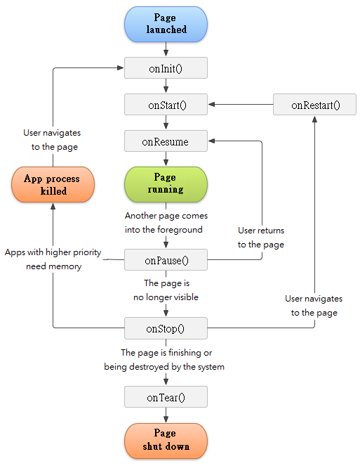
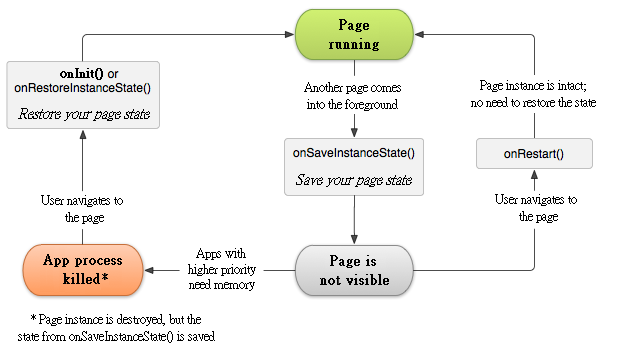

Quickview
A page provides a user interface for a single screen in your application
Pages can move into the background and then be resumed with their state restored
In this document
A Page is an application component that provides a screen with which users can interact in order to do something, such as dial the phone, take a photo, send an email, or view a map. Each page is given a window in which to draw its user interface. The window typically fills the screen, but may be smaller than the screen and float on top of other windows.
An application usually consists of multiple pages that are loosely bound to each other. Typically, one page in an application is specified as the "main" page, which is presented to the user when launching the application for the first time. Each page can then start another page in order to perform different actions. Each time a new page starts, the previous page is stopped, but the system preserves the page in a stack (the "back stack"). When a new page starts, it is pushed onto the back stack and takes user focus. The back stack abides to the basic "last in, first out" stack mechanism, so, when the user is done with the current page and presses the Back button, it is popped from the stack (and destroyed) and the previous page resumes.
When a page is stopped because a new page starts, it is notified of this change in state through the page's lifecycle callback methods. There are several callback methods that a page might receive, due to a change in its state-whether the system is creating it, stopping it, resuming it, or destroying it-and each callback provides you the opportunity to perform specific work that's appropriate to that state change. For instance, when stopped, your page should release any large objects, such as network or database connections. When the page resumes, you can reacquire the necessary resources and resume actions that were interrupted. These state transitions are all part of the page lifecycle.
The rest of this document discusses the basics of how to build and use a page, including a complete discussion of how the page lifecycle works, so you can properly manage the transition between various page states.
To create a page, you must create a subclass of Page (or an existing subclass of it). In your subclass, you need to implement callback methods that the system calls when the page transitions between various states of its lifecycle, such as when the page is being created, stopped, resumed, or destroyed. The two most important callback methods are:
There are several other lifecycle callback methods that you should use in order to provide a fluid user experience between pages and handle unexpected interuptions that cause your page to be stopped and even destroyed. All of the lifecycle callback methods are discussed later, in the section about Managing the Page Lifecycle.
The user interface for a page is provided by a hierarchy of Widgets-objects derived from the Widget class. Each Widget controls a particular rectangular space within the page's window and can respond to user interaction. For example, a widget might be a button that initiates an action when the user touches it.
Gaia provides a number of ready-made widgets that you can use to design and organize your layout. Widgets provide a visual (and interactive) elements for the screen, such as a button, text field, checkbox, or just an image. "Controllers" are widgets derived from WidgetController that provide a unique layout model for its child widgets, such as a linear layout, a grid layout, or relative layout. You can also subclass the widget and WidgetController classes (or existing subclasses) to create your own widgets and layouts and apply them to your page layout.
The most common way to define a layout using widgets is with an XML layout file saved in your application resources. This way, you can maintain the design of your user interface separately from the source code that defines the page's behavior. You can set the layout as the UI for your page with setContentView(), passing the resource ID for the layout. However, you can also create new Widgets in your page code and build a view hierarchy by inserting new Widgets into a WidgetController, then use that layout by passing the root WidgetController to setContentView().
For information about creating a user interface, see the User Interface documentation.
You must declare your page in the manifest file in order for it to be accessible to the system. To declare your page, open your manifest file and add an
<manifest ... >
<application ... >
<page gaia:name=".ExamplePage" />
...
</application ... >
...
</manifest >
There are several other attributes that you can include in this element, to define properties such as the label for the page, an icon for the page, or a theme to style the page's UI. The gaia:name attribute is the only required attribute-it specifies the class name of the page. Once you publish your application, you should not change this name, because if you do, you might break some functionality, such as application shortcuts (read the blog post, Things That Cannot Change).
See the
An
When you create a new application using the Gaia SDK tools, the stub page that's created for you automatically includes an demand filter that declares the page responds to the "main" action and should be placed in the "launcher" category. The demand filter looks like this:
<page gaia:name=".ExamplePage" gaia:icon="@drawable/app_icon">
<demand-filter>
<action gaia:name="android.intent.action.MAIN" />
<category gaia:name="android.intent.category.LAUNCHER" />
</demand-filter>
</page>
The
If you intend for your application to be self-contained and not allow other applications to activate its pages, then you don't need any other demand filters. Only one page should have the "main" action and "launcher" category, as in the previous example. Pages that you don't want to make available to other applications should have no demand filters and you can start them yourself using explicit demands (as discussed in the following section).
However, if you want your page to respond to implicit demands that are delivered from other applications (and your own), then you must define additional demand filters for your page. For each type of demand to which you want to respond, you must include an
For more information about how your pages can respond to demands, see the Demands and Demand Filters document.
You can start another page by calling startPage(), passing it a demand that describes the page you want to start. The demand specifies either the exact page you want to start or describes the type of action you want to perform (and the system selects the appropriate page for you, which can even be from a different application). A demand can also carry small amounts of data to be used by the page that is started.
When working within your own application, you'll often need to simply launch a known page. You can do so by creating a demand that explicitly defines the page you want to start, using the class name. For example, here's how one page starts another page named SignInPage:
String pkg("SignInPkg");
String cls("SignInPage");
Demand* pDemand = new Demand();
if (pDemand != NULL)
pDemand->setClassName(pkg, cls);
startPage(Demand);
However, your application might also want to perform some action, such as send an email, text message, or status update, using data from your page. In this case, your application might not have its own pages to perform such actions, so you can instead leverage the pages provided by other applications on the device, which can perform the actions for you. This is where demands are really valuable-you can create a demand that describes an action you want to perform and the system launches the appropriate page from another application. If there are multiple pages that can handle the demand, then the user can select which one to use. For example, if you want to allow the user to send an email message, you can create the following demand:
StringArray recipientArray; // Fill some data into recipientArray Demand* pDemand = new Demand(Demand::ACTION_SEND()); Persistence extra; extra.putStringArray(Demand::EXTRA_EMAIL(), recipientArray); pDemand->putExtra(recipientArray); startPage(pDemand);
The EXTRA_EMAIL() extra added to the demand is a StringArray of email addresses to which the email should be sent. When an email application responds to this demand, it reads the StringArray provided in the extra and places them in the "to" field of the email composition form. In this situation, the email application's page starts and when the user is done, your page resumes.
Sometimes, you might want to receive a result from the page that you start. In that case, start the page by calling startPageForResult() (instead of startPage()). To then receive the result from the subsequent page, implement the onPageResult() callback method. When the subsequent page is done, it returns a result in a Demand to your onPageResult() method.
For example, perhaps you want the user to pick one of their contacts, so your page can do something with the information in that contact. Here's how you can create such a demand and handle the result:
// private
void ExamplePage::pickContact() {
// Create a demand to "pick" a contact, as defined by the content provider URI
Demand* pDemand = new Demand(Demand::ACTION_PICK(), AddressBook::CONTACTS_CONTENT_URI());
startPageForResult(pDemand, PICK_CONTACT_REQUEST);
}
// protected virtual
void ExamplePage::onPageResult(int requestCode, int resultCode, Demand* data) {
// If the request went well (OK) and the request was PICK_CONTACT_REQUEST
if (resultCode == Page::RESULT_OK && requestCode == PICK_CONTACT_REQUEST) {
// Perform a query to the contact's content provider for the contact's name
Context* ctx = new Context(this);
ContentResolver* cr = ctx->getContentResolverN();
StringArray sa_query(1);
sa_query.replaceAt(Contacts::DISPLAY_NAME(), 0);
Cursor* cursor = cr->queryN(data->getData(), &sa_query, NULL, NULL, NULL);
if (cursor->moveToFirst()) { // True if the cursor is not empty
int columnIndex = cursor->getColumnIndex(Contacts::DISPLAY_NAME());
String name = cursor->getString(columnIndex);
// Do something with the selected contact's name...
}
}
}
This example shows the basic logic you should use in your onPageResult() method in order to handle an page result. The first condition checks whether the request was successful-if it was, then the resultCode will be RESULT_OK-and whether the request to which this result is responding is known-in this case, the requestCode matches the second parameter sent with startPageForResult(). From there, the code handles the page result by querying the data returned in an Demand (the data parameter).
What happens is, a ContentResolver performs a query against a content provider, which returns a Cursor that allows the queried data to be read. For more information, see the Content Providers document.
For more information about using demands, see the Demands and Demand Filters document.
You can shut down a page by calling its finish() method. You can also shut down a separate page that you previously started by calling finishPage().
Note: In most cases, you should not explicitly finish a page using these methods. As discussed in the following section about the page lifecycle, the Gaia system manages the life of a page for you, so you do not need to finish your own pages. Calling these methods could adversely affect the expected user experience and should only be used when you absolutely do not want the user to return to this instance of the page.
Managing the lifecycle of your pagess by implementing callback methods is crucial to developing a strong and flexible application. The lifecycle of a page is directly affected by its association with other pages, its task and back stack.
A page can exist in essentially three states:
Resumed
The page is in the foreground of the screen and has user focus. (This state is also sometimes referred to as "running".)
Paused
Another page is in the foreground and has focus, but this one is still visible. That is, another page is visible on top of this one and that page is partially transparent or doesn't cover the entire screen. A paused page is completely alive (the Page object is retained in memory, it maintains all state and member information, and remains attached to the window manager), but can be killed by the system in extremely low memory situations.
Stopped
The page is completely obscured by another page (the page is now in the "background"). A stopped page is also still alive (the Page object is retained in memory, it maintains all state and member information, but is not attached to the window manager). However, it is no longer visible to the user and it can be killed by the system when memory is needed elsewhere.
If a page is paused or stopped, the system can drop it from memory either by asking it to finish (calling its finish() method), or simply killing its process. When the page is opened again (after being finished or killed), it must be created all over.
When a page transitions into and out of the different states described above, it is notified through various callback methods. All of the callback methods are hooks that you can override to do appropriate work when the state of your page changes. The following skeleton page includes each of the fundamental lifecycle methods:
Class ExamplePage : public gaia::core::Page {
protected:
virtual void onInit(Persistence* savedInstanceState) {
// The page is being created.
}
virtual void onStart() {
// The page is about to become visible.
}
virtual void onResume() {
// The page has become visible (it is now "resumed").
}
virtual void onPause() {
// Another page is taking focus (this page is about to be "paused").
}
virtual void onStop() {
// The page is no longer visible (it is now "stopped")
}
virtual void onTear() {
// The page is about to be destroyed.
}
}
Taken together, these methods define the entire lifecycle of an page. By implementing these methods, you can monitor three nested loops in the page lifecycle:
The entire lifetime of a page happens between the call to onInit() and the call to onTear(). Your page should perform setup of "global" state (such as defining layout) in onInit(), and release all remaining resources in onTear(). For example, if your page has a thread running in the background to download data from the network, it might create that thread in onInit() and then stop the thread in onTear().
The visible lifetime of a page happens between the call to onStart() and the call to onStop(). During this time, the user can see the page on-screen and interact with it. For example, onStop() is called when a new page starts and this one is no longer visible. Between these two methods, you can maintain resources that are needed to show the page to the user. For example, you can register a BroadcastReceiver in onStart() to monitor changes that impact your UI, and unregister it in onStop() when the user can no longer see what you are displaying. The system might call onStart() and onStop() multiple times during the entire lifetime of the page, as the page alternates between being visible and hidden to the user.
The foreground lifetime of a page happens between the call to onResume() and the call to onPause(). During this time, the page is in front of all other pages on screen and has user input focus. A page can frequently transition in and out of the foreground-for example, onPause() is called when the device goes to sleep or when a dialog appears. Because this state can transition often, the code in these two methods should be fairly lightweight in order to avoid slow transitions that make the user wait.
Figure 1 illustrates these loops and the paths a page might take between states. The rectangles represent the callback methods you can implement to perform operations when the page transitions between states.

Figure 1. The page lifecycle.
The same lifecycle callback methods are listed in table 1, which describes each of the callback methods in more detail and locates each one within the page's overall lifecycle, including whether the system can kill the page after the callback method completes.
Table 1. A summary of the page lifecycle's callback methods.
| Method | Description | Killable after? | Next |
|---|---|---|---|
| onInit() | Called when the page is first created. This is where you should do all of your normal static set up - create widgets, bind data to lists, and so on. This method is passed a Persistence object containing the page's previous state, if that state was captured (see Saving Page State, later). Always followed by onStart(). | No | onStart() |
| onRestart() | Called after the page has been stopped, just prior to it being started again. Always followed by onStart() | No | onStart() |
| onStart() | Called just before the page becomes visible to the user. Followed by onResume() if the page comes to the foreground, or onStop() if it becomes hidden. | No | onResume() or onStop() |
| onResume() | Called just before the page starts interacting with the user. At this point the page is at the top of the page stack, with user input going to it. Always followed by onPause(). | No | onPause() |
| onPause() | Called when the system is about to start resuming another page. This method is typically used to commit unsaved changes to persistent data, stop animations and other things that may be consuming CPU, and so on. It should do whatever it does very quickly, because the next page will not be resumed until it returns. Followed either by onResume() if the page returns back to the front, or by onStop() if it becomes invisible to the user. | Yes | onResume() or onStop() |
| onStop() | Called when the page is no longer visible to the user. This may happen because it is being destroyed, or because another page (either an existing one or a new one) has been resumed and is covering it. Followed either by onRestart() if the page is coming back to interact with the user, or by onTear() if this page is going away. | Yes | onRestart() or onTear() |
| onTear() | Called before the page is destroyed. This is the final call that the page will receive. It could be called either because the page is finishing (someone called finish() on it), or because the system is temporarily destroying this instance of the page to save space. You can distinguish between these two scenarios with the isFinishing() method. | Yes | nothing |
The column labeled "Killable after?" indicates whether or not the system can kill the process hosting the page at any time after the method returns, without executing another line of the page's code. Three methods are marked "yes": (onPause(), onStop(), and onTear()). Because onPause() is the first of the three, once the page is created, onPause() is the last method that's guaranteed to be called before the process can be killed-if the system must recover memory in an emergency, then onStop() and onTear() might not be called. Therefore, you should use onPause() to write crucial persistent data (such as user edits) to storage. However, you should be selective about what information must be retained during onPause(), because any blocking procedures in this method block the transition to the next page and slow the user experience.
Methods that are marked "No" in the Killable column protect the process hosting the page from being killed from the moment they are called. Thus, an page is killable from the time onPause() returns to the time onResume() is called. It will not again be killable until onPause() is again called and returns.
Note: A page that's not technically "killable" by this definition in table 1 might still be killed by the system-but that would happen only in extreme circumstances when there is no other recourse. When a page might be killed is discussed more in the Processes and Threading document.
The introduction to Managing the Page Lifecycle briefly mentions that when a page is paused or stopped, the state of the page is retained. This is true because the Page object is still held in memory when it is paused or stopped-all information about its members and current state is still alive. Thus, any changes the user made within the page are retained so that when the page returns to the foreground (when it "resumes"), those changes are still there.
However, when the system destroys a page in order to recover memory, the Page object is destroyed, so the system cannot simply resume it with its state intact. Instead, the system must recreate the Page object if the user navigates back to it. Yet, the user is unaware that the system destroyed the page and recreated it and, thus, probably expects the page to be exactly as it was. In this situation, you can ensure that important information about the page state is preserved by implementing an additional callback method that allows you to save information about the state of your page: onSaveInstanceState().
The system calls onSaveInstanceState() before making the page vulnerable to destruction. The system passes this method a Persistence in which you can save state information about the page as name-value pairs, using methods such as putString() and putInt(). Then, if the system kills your application process and the user navigates back to your page, the system recreates the page and passes the Persistence to both onInit() and onRestoreInstanceState(). Using either of these methods, you can extract your saved state from the Persistence and restore the page state. If there is no state information to restore, then the Persistence passed to you is NULL (which is the case when the page is created for the first time).

Figure 2. The two ways in which a page returns to user focus with its state intact: either the page is destroyed, then recreated and the page must restore the previously saved state, or the page is stopped, then resumed and the page state remains intact.
Note: There's no guarantee that onSaveInstanceState() will be called before your page is destroyed, because there are cases in which it won't be necessary to save the state (such as when the user leaves your page using the Back button, because the user is explicitly closing the page). If the system calls onSaveInstanceState(), it does so before onStop() and possibly before onPause().
However, even if you do nothing and do not implement onSaveInstanceState(), some of the page state is restored by the Page class's default implementation of onSaveInstanceState(). Specifically, the default implementation calls the corresponding onSaveInstanceState() method for every widget in the layout, which allows each widget to provide information about itself that should be saved. Almost every widget in the Gaia framework implements this method as appropriate, such that any visible changes to the UI are automatically saved and restored when your page is recreated. For example, the EditWidget saves any text entered by the user and the CheckBox widget saves whether it's checked or not. The only work required by you is to provide a unique ID (with the gaia:id attribute) for each widget you want to save its state. If a widget does not have an ID, then the system cannot save its state.
Although the default implementation of onSaveInstanceState() saves useful information about your page's UI, you still might need to override it to save additional information. For example, you might need to save member values that changed during the page's life (which might correlate to values restored in the UI, but the members that hold those UI values are not restored, by default).
Note: Because onSaveInstanceState() is not guaranteed to be called, you should use it only to record the transient state of the page (the state of the UI)-you should never use it to store persistent data. Instead, you should use onPause() to store persistent data (such as data that should be saved to a database) when the user leaves the page.
A good way to test your application's ability to restore its state is to simply rotate the device so that the screen orientation changes. When the screen orientation changes, the system destroys and recreates the page in order to apply alternative resources that might be available for the new screen configuration. For this reason alone, it's very important that your page completely restores its state when it is recreated, because users regularly rotate the screen while using applications.
Some device configurations can change during runtime (such as screen orientation, keyboard availability, and language). When such a change occurs, Gaia recreates the running page (the system calls onTear(), then immediately calls onInit()). This behavior is designed to help your application adapt to new configurations by automatically reloading your application with alternative resources that you've provided (such as different layouts for different screen orientations and sizes).
If you properly design your page to handle a restart due to a screen orientation change and restore the page state as described above, your application will be more resilient to other unexpected events in the page lifecycle.
The best way to handle such a restart is to save and restore the state of your page using onSaveInstanceState() and onRestoreInstanceState() (or onInit()), as discussed in the previous section.
For more information about configuration changes that happen at runtime and how you can handle them, read the guide to Handling Runtime Changes.
When one page starts another, they both experience lifecycle transitions. The first page pauses and stops (though, it won't stop if it's still visible in the background), while the other page is created. In case these pages share data saved to disc or elsewhere, it's important to understand that the first page is not completely stopped before the second one is created. Rather, the process of starting the second one overlaps with the process of stopping the first one.
The order of lifecycle callbacks is well defined, particularly when the two pages are in the same process and one is starting the other. Here's the order of operations that occur when Page A starts Page B:
Page A's onPause() method executes.
Page B's onInit(), onStart(), and onResume() methods execute in sequence. (Page B now has user focus.)
Then, if Page A is no longer visible on screen, its onStop() method executes.
This predictable sequence of lifecycle callbacks allows you to manage the transition of information from one page to another. For example, if you must write to a database when the first page stops so that the following page can read it, then you should write to the database during onPause() instead of during onStop().